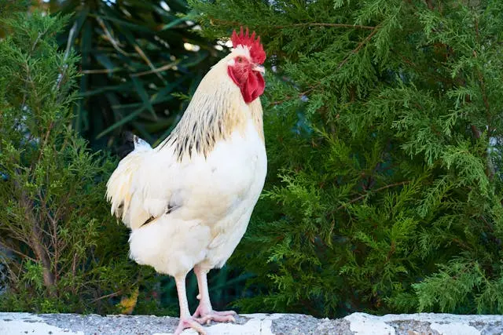
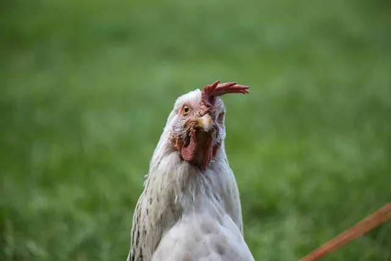

Charlie the Chicken
Here at Craffty's Farm you will be able to meet the animals we home here, hear their voices and learn a little bit more about them! At the moment we only have three animals, can you guess what they are?
It's not going to be easy though. Before you can meet the animals, you're going to have to find them!